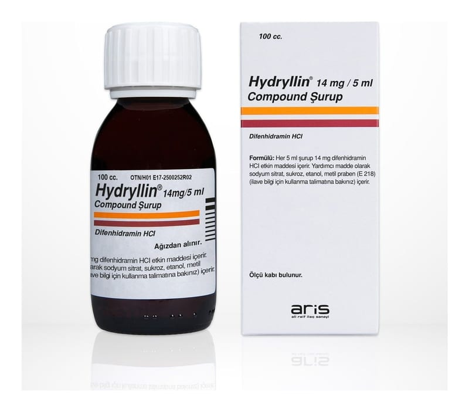

Hydryllin 14 mg/5 ml Compound Şurup, 100 ml

Ne için kullanılır
KT · Bölüm 1HYDRYLLİN®kutu içerisinde 100 ml’lik cam şişede takdim edilmektedir. Şurup, kızıl kahverenginde, portakal kokulu viskoz likittir. Soğuk algınlığına bağlı öksürük ve solunum yolları tıkanıklığı semptomlarının giderilmesinde etkilidir. 12 yaş ve üstü çocuklarda ve yetişkinlerde kullanılır.